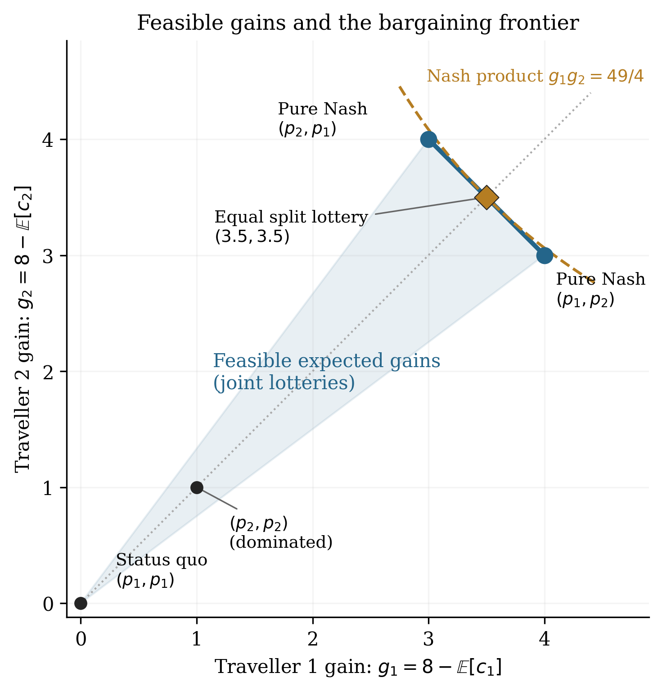
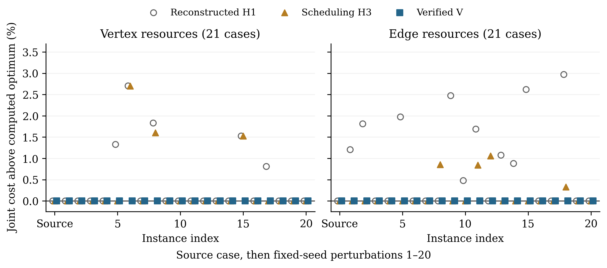
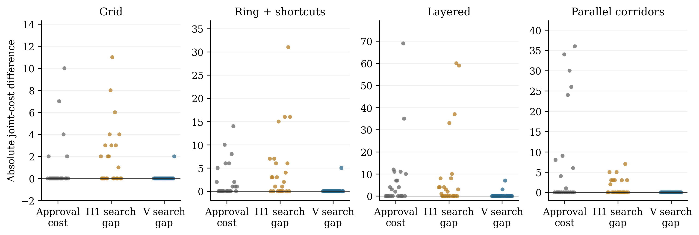

Game-theoretic results on Nash equilibria, cores, cost of stability and regret efficiency, plus a terminating negotiation procedure, are formalized and kernel-checked in Lean 4 with Mathlib.
Abstract
We present an AI-assisted mathematical addendum to Strategic Trip Planning: Striking a Balance Between Competition and Cooperation (Amar, 2018). We reconstruct selected relationships between strategic choice, cooperative stability, participant approval and enforcement. The thesis's Nash-to-core proposition is under-specified until outsider opportunities are stated. We verify two-person implications under fixed outsiders and explicit efficiency conditions. Under isolation, the original example has an empty TU core; its funded counterpart uses an explicit external subsidy. For a monotone resource model we characterize the exact financing gap. A finite negotiation procedure implemented in Lean is proved to terminate with participant approval, joint-cost non-worsening and local optimality against permitted approved moves. Supporting formalizations address bargaining geometry and regret-based efficiency. A resource-game counterinstance shows why monotonicity alone provides no uniform price-of-anarchy bound. Reproducible computations compare a documented heuristic reconstruction with the verified procedure on 44 source-based instances and 96 starting cases from four additional synthetic network families. Acceptance-matched heuristic and randomized pairwise-search controls contextualize the optimization results. The mathematical ingredients are established results; the contribution is a traceable reconstruction linking source statements, explicit assumptions, checked proofs, executable code and retained counterinstances. The study illustrates how AI-assisted investigation can turn engineering intuitions from legacy research into precise mathematical claims whose conditions and computational consequences can be inspected and reproduced.
Problem
A 2018 thesis on strategic trip planning made engineering claims linking Nash equilibria, cooperative cores, bargaining and enforcement. The claims were under-specified, notably a Nash-to-core proposition that depends on unstated outsider opportunities.
Approach
With AI assistance, selected claims are rebuilt as explicit definitions, assumptions and theorems, and the general results are kernel-checked in Lean 4.24.0 with Mathlib. The proved results include:
- a fixed-outsider core characterization;
- an isolated-core criterion and the exact financing gap for monotone congestion models;
- a contract-enforcement penalty;
- empirical coarse correlated equilibrium (CCE) and smoothness efficiency bounds.
A finite negotiation procedure implemented as executable Lean is proved to terminate with participant approval and joint-cost guarantees. Reproducible simulations compare it with a reconstructed heuristic.

Figure 1: Feasible expected gains, the efficient frontier, pure Nash outcomes and an attainable Nash-product maximizer. Gains use the interacting status quo (8,8) , not isolated exit costs. The shaded triangle represents joint lotteries over the displayed deterministic outcomes.
Results
Two-person implications from Nash equilibrium to core are verified under fixed outsiders and explicit efficiency conditions. The original example has an empty core under isolation, and a counterinstance shows that monotonicity alone gives no uniform price-of-anarchy bound. On the simulated instances, the verified procedure is compared with heuristic and randomized pairwise-search controls; on the source-derived vertex instance, all shown negotiation paths reach the computed minimum joint cost of 254.

Figure 3: Joint-cost gaps above the computed optimum for the 21 coalesced cases per resource model. Markers are horizontally offset for readability. Seed indices are discrete case identifiers; no statistical confidence intervals or general approximation guarantee are implied.

Figure 4: Gap decomposition on independent network families. Each group contains 24 baseline-specific cases. Approval cost is the participation gap; H1 and V search gaps compare published outcomes with the exact approved minimum. H1 includes baseline fallback when raw approval fails; matched controls are reported separately below. Vertical scales differ between families; horizontal offsets only re